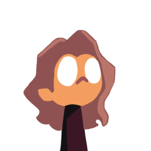

RunixTC
Notas
La verdad, gracias por visitar mi web, es por mucho un logro que veas esta web para finalmente yo saber que te gusta el sitio.
Solo soy, un tipo random que un dia quizo levantar algo desde la nada, un juego, una app, algo para aquellos que no contamos con dispositivos pesados, ja, ojala me viera mi yo del pasado.
Se que conoces que soy de México, no hace falta saber porque de mi ultima frase, asi que si algun dia me voy, solo dejo esta web, y todo lo que he hecho, para ustedes, solo eso quiero, muchas gracias. RunixTC